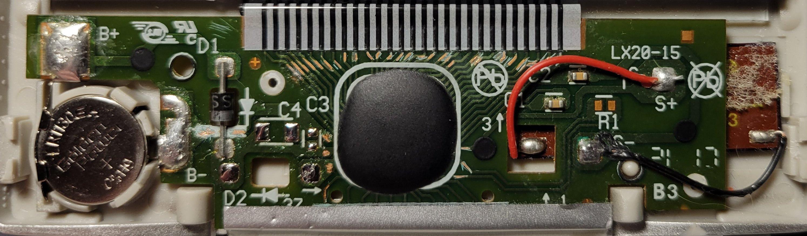
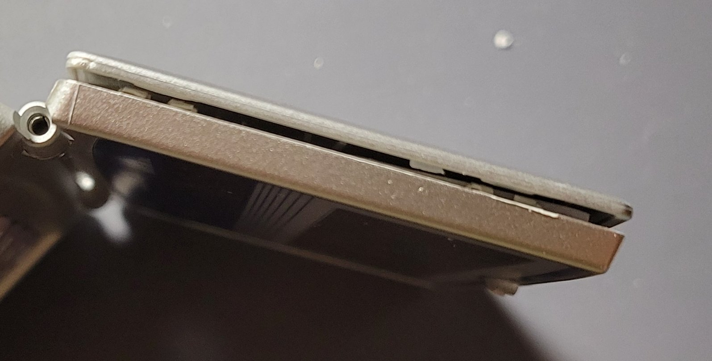

Home: ⌂ Introduction ⌂

Figure 1: Primary PCB with C3, C4, and D2 Removed for Rating Measurements
All traces to the LCD and battery were scratched to remove their protective layering, which allowed for measurements and timing diagrams to be acquired. Select traces to the keypad and solar cells were also scratched for the same purpose.
Figure 2: C3, C4, and D2 (Top to Bottom)
")
Figure 3: Primary PCB with All Components Reattached and Solder Reflowed

Figure 4: Calculator’s Damaged Shell
Some of the plastic tabs on the top of the shell were damaged during the disassembly process and are now unable to properly latch.

Figure 5: Alternative View – Calculator’s Damaged Shell
Aside from minor damage to the external shell and the loss of a screw, the device is fully functional. The PCB was cleaned with isopropyl alcohol, and all exposed traces on the primary PCB were coated with clear nail polish to help prevent potential degradation of the traces.
Prev: ◄— Product Analysis
◄—
Next: —► Lessons Learned —►